Data lived in separate systems.
Users needed to combine regional, environmental, demographic, logistical, and historical data before they could act.
Product Design Internship · Deloitte US · Fall 2024
During my Deloitte US internship, I helped design Sage: an AI-powered geospatial decision platform for protecting food and water systems before, during, and after climate emergencies.
Read the decisions ↓As part of a multidisciplinary SCADpro internship team working with Deloitte Government & Public Services, I helped investigate how geospatial analysis and AI could support faster, more coordinated decisions around food and water security.
The work moved from a broad client brief through research, product strategy, prototyping, testing, and a final concept presentation. My focus was connecting user needs, system complexity, and public-sector value into a coherent product experience.
Connected secondary research, benchmarks, and expert interviews to product opportunities.
Helped narrow the audience, use case, workflow, and value story.
Designed and refined critical flows across maps, AI assistance, and resource planning.
Translated design decisions into a clear operational and business narrative.
A key recommendation I helped shape
The challenge
Food and water resilience crosses emergency management, agriculture, public health, transportation, utilities, and policy. Each team sees a different piece of the same event.
Users needed to combine regional, environmental, demographic, logistical, and historical data before they could act.
Dense maps and reports slowed non-technical decision makers and made cross-department communication difficult.
During emergencies, imperfect or delayed information still had to support resource allocation, evacuation, and public communication.
Recommendations needed confidence indicators, traceable sources, and human control.
Research synthesis
Benchmark analysis and six expert interviews showed that a useful platform had to serve both immediate resource decisions and long-range resilience planning.
Allocate food, water, transport, shelters, and personnel while conditions change.
Model scenarios, safeguard vulnerable communities, and build support for policy and investment.
We chose California to make the system concrete: wildfire risk, drought, agricultural dependency, water stress, and complex inter-agency coordination converge in one state. The product architecture remained scalable beyond it.
We stopped treating maps as the destination. The emerging opportunity was a workflow that helps users understand an event, evaluate impact, coordinate resources, document decisions, and learn afterward.
From broad platform to critical path
Early concepts included dashboards, data libraries, contacts, predictive actions, and global maps. Testing helped us prioritize the wildfire response flow as the clearest demonstration of the system.
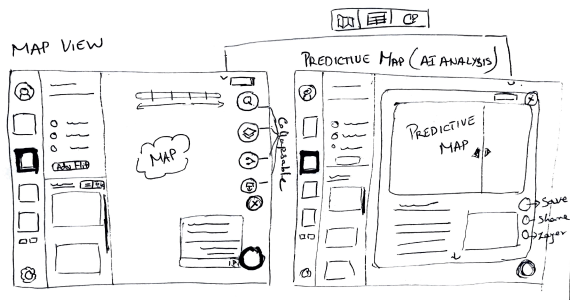
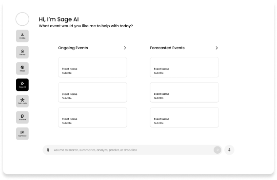
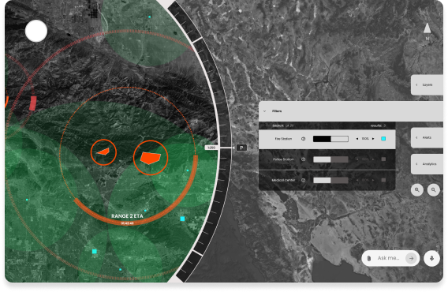
User testing
We put the prototype in front of users to observe how they interpreted the map, navigated layers, and used the AI assistant. The sessions exposed the need for clearer action hierarchy and stronger trust cues around generated recommendations.
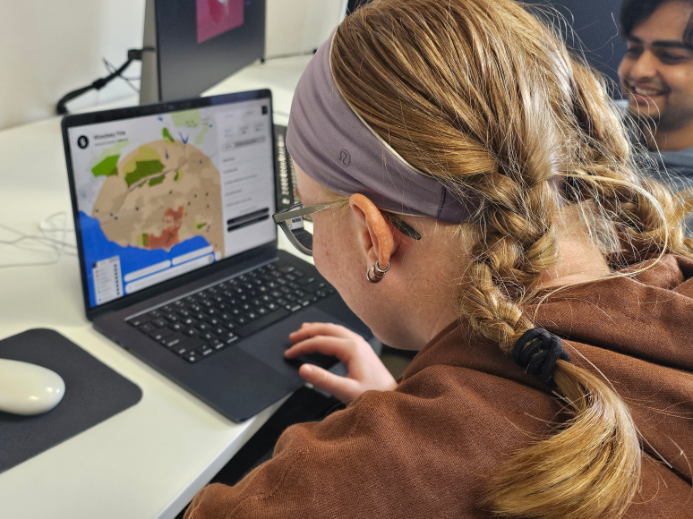
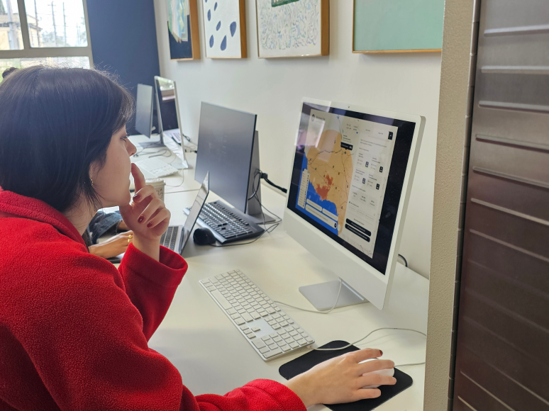
The final direction
One environment for situational awareness, AI-assisted action, inter-agency coordination, and institutional learning.
The map combines fire spread, population, agriculture, water, facilities, and evacuation information. Tiered risk zones communicate current and predicted impact, while controls let specialists inspect the evidence they need.
Keep environmental data on the map and decision data in a persistent side panel, so users can move between “where” and “what now” without changing contexts.

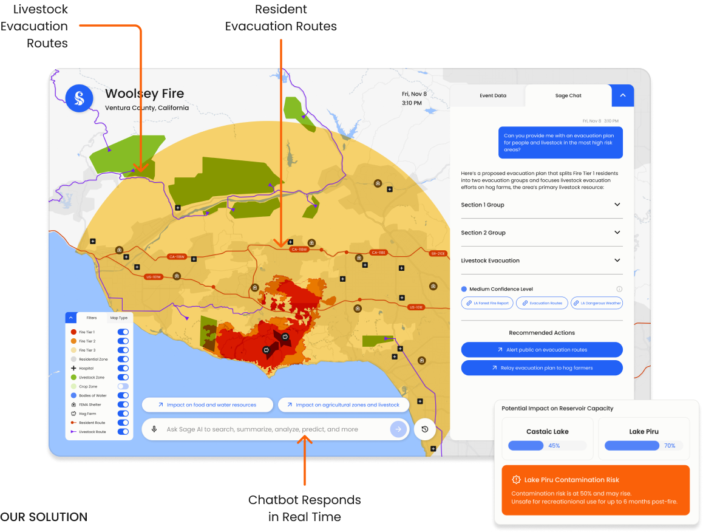
Sage’s assistant proposes evacuation routes and resource strategies using the active event context. Recommendations remain connected to the map, confidence level, and source datasets.
Treat AI as an analyst, not an authority. Recommendations are explicit, source-linked, and ready for human review before execution.
Resource managers can inspect shelter capacity, calculate food and water requirements, compare transportation options, and coordinate support with agencies such as FEMA.
An insight is only valuable if the system helps the team translate it into ownership, resources, and a next action.
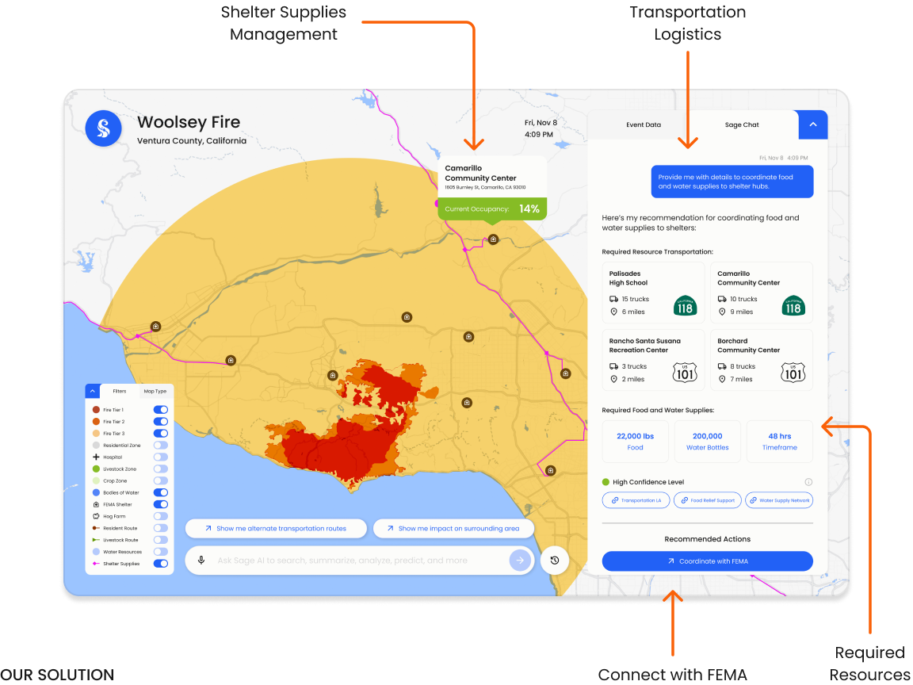
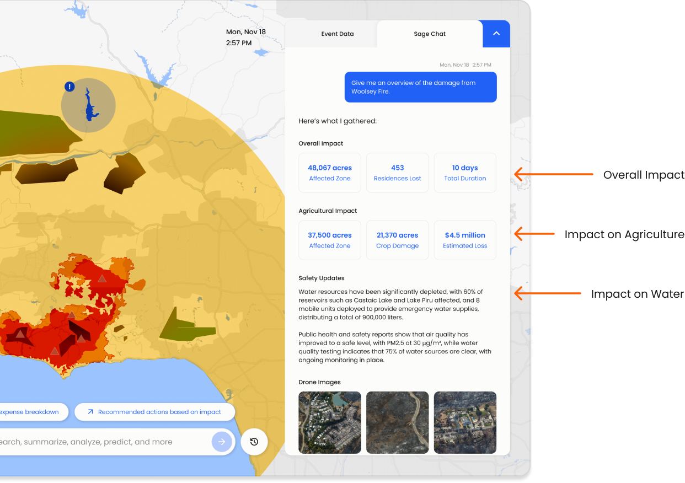
After an event, Sage compiles impact, damage, safety updates, imagery, and actions into a shareable report. This creates a transparent record for evaluation, funding, and future planning.
Connect live response and post-event reporting so documentation is produced by the work, instead of becoming a separate burden afterward.
Beyond the critical path
The final concept extends from emergency response into data stewardship, cross-agency communication, reporting, and long-term resilience.
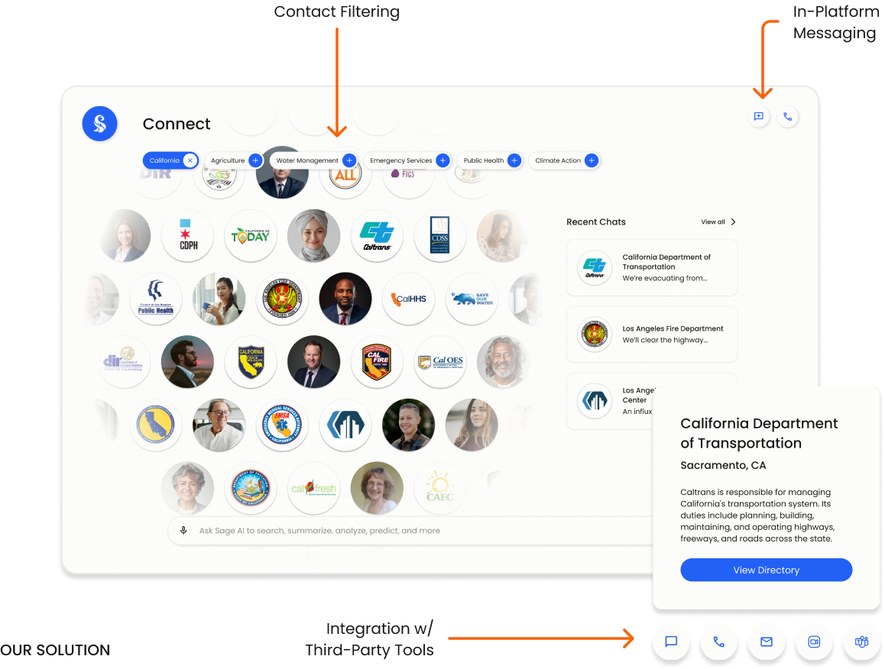
CoordinateFind the right agency or expert and move directly into the communication tools teams already use.
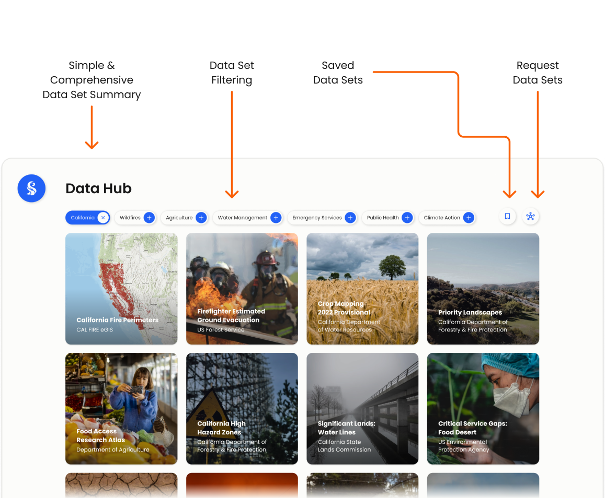
AccessBrowse, save, filter, and request datasets across agencies while keeping sources visible.
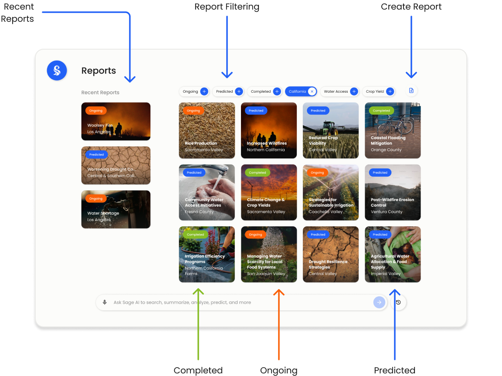
DocumentManage ongoing, predicted, and completed events as a shared record of decisions and outcomes.
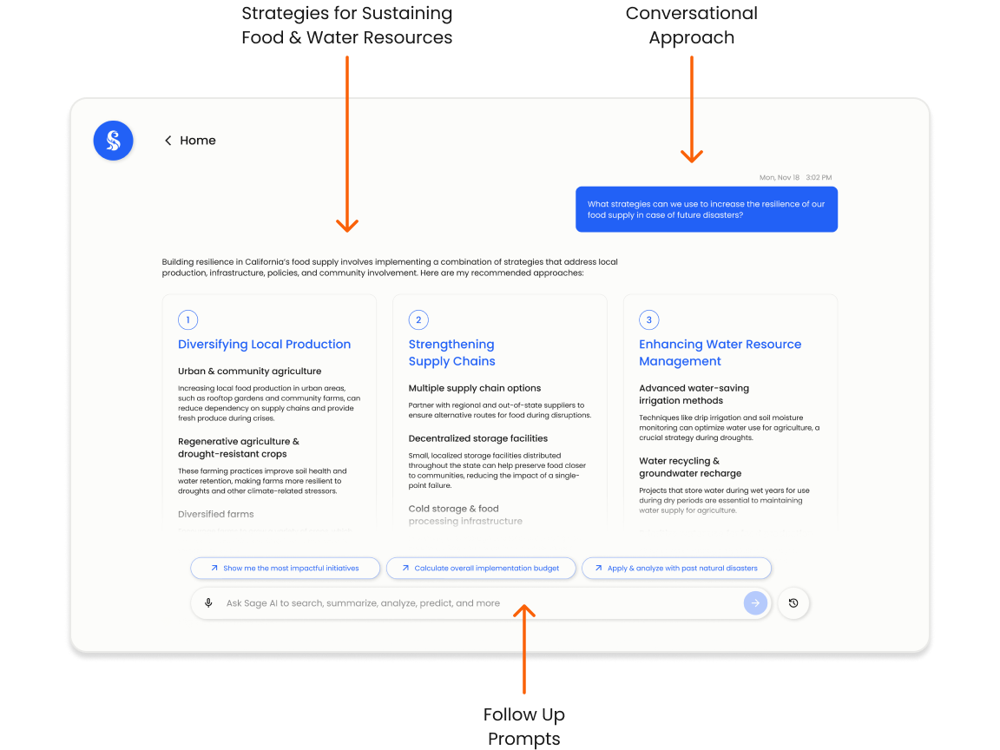
PrepareUse historical and real-time evidence to develop food, water, infrastructure, and community strategies.
Building confidence
In high-stakes government work, speed without accountability creates new risk. Sage pairs generated recommendations with confidence indicators and links to the original datasets, keeping the user in control.
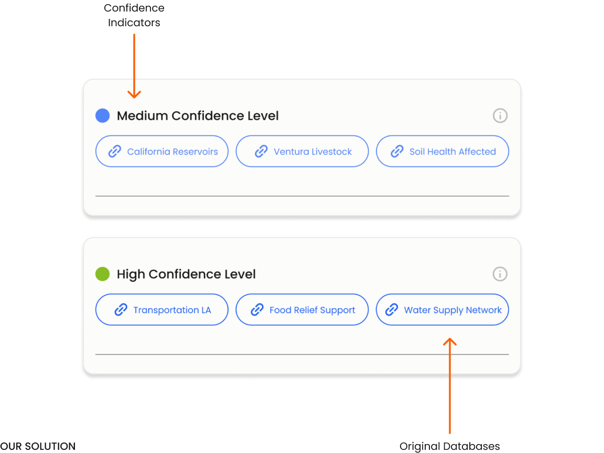
Impact framework
Sage is a concept, so these are proposed measures for a pilot rather than claimed launch results.
Measure time from alert to an approved, assigned resource or evacuation action.
Measure hours spent finding, reconciling, communicating, and documenting data.
Measure duplicate work, missed dependencies, and time to reach the correct owner.
Measure the effectiveness of interventions across food, water, agriculture, and public safety.
Validate whether Sage reduces the time to understand impact, propose a resource plan, verify sources, coordinate ownership, and produce a post-event report.
The internship experience
I worked within a multidisciplinary team and engaged with Deloitte stakeholders, domain experts, and emergency-management perspectives. My computer science background helped me reason about data and AI constraints; my design role focused on turning that complexity into clear product decisions, testable flows, and a persuasive client narrative.
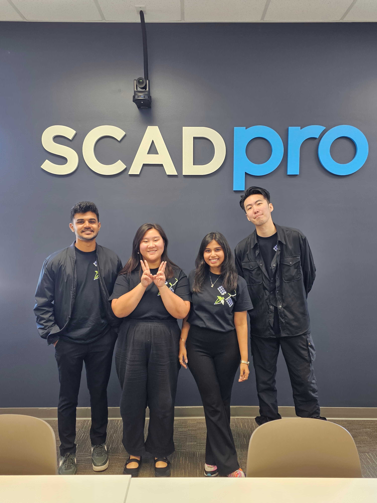
This internship changed how I think about design in high-stakes, multi-stakeholder environments. I learned to move between research depth, product trade-offs, system constraints, and client communication without losing the human decision at the center.
Sage also strengthened my point of view on responsible AI: an interface cannot simply be intelligent; it must help users inspect reasoning, coordinate responsibility, and remain accountable.
Explore more work →